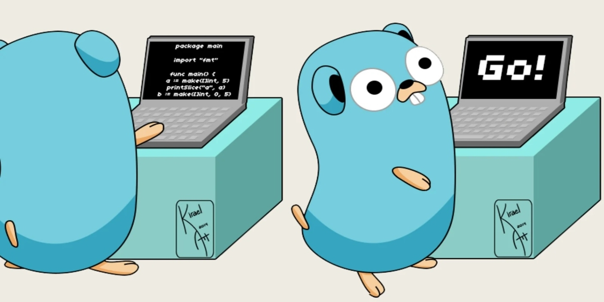

Синтаксис языка Go
Go является статически компилируемым в машинный код языком с сильной статической типизацией. Основной синтаксис и структура программ на языке Go очень просты и удобны для понимания. Программа на Go состоит из отдельных команд, а строчный разделитель является завершающим символом оператора (так же, как и в Python; завершающий символ в, например, C++ - точка с запятой)
Программы Go организованы в пакеты, которые представляют собой набор исходных файлов в одном каталоге, которые компилируются вместе. Функции, типы, переменные и константы, определенные в одном исходном файле, видны всем остальным исходным файлам в том же пакете.
Вот основные элементы синтаксиса языка Go:
- Пакеты и импорты
- Переменные и константы
- Типы данных
- Функции
- Управляющие конструкции
- Конструкция if
- Конструкция switch
- Конструкция for
- Срезы и карты
- Объявление переменных похоже на Pascal;
- Ключевые слова "package", "import" похоже на Java;
- Функция main похоже на С++;
Понимание синтаксиса Go и типов данных
Это лишь краткое введение в синтаксис языка программирования Go. Более подробную информацию о синтаксисе и возможностях языка Go можно найти в официальной документации языка.
| Элемент | Описание |
|---|---|
| Пакеты и импорты |
Каждый файл программы должен находиться в определенном пакете, который указывается в начале файла.
Пакет - это, по сути, каталог, содержащий один или несколько исходных файлов Go. Первая строка каждого файла Go должна объявлять пакет, к которому он принадлежит, например
package main - здесь исходный файл принадлежит пакету "main".Блок кода, следующий за объявлением пакета, обычно состоит из операторов импорта, которые включают другие пакеты, необходимые для вашей программы: import ( "fmt" "math" ) - оператор import определяет пакеты, которые должны быть импортированы в текущий файл, позволяя вам получить доступ к их экспортированным функциям, таким как функции и переменные.
|
| Переменные и константы |
Переменные в Go могут быть объявлены с помощью ключевого слова var, за которым следует имя переменной, тип и необязательное начальное значение: var x int = 10 Если начальное значение указано, Go может вывести тип, что позволяет опустить объявление типа: var x = 10 // x - intМожно также использовать синтаксис объявления коротких переменных Go, который автоматически определяет тип и присваивает начальное значение: x := 10 // x - intКонстанты могут быть объявлены с помощью ключевого слова const. Их значения должны быть известны во время компиляции и не могут быть изменены во время выполнения программы: const PI = 3.14159 |
| Типы данных |
Go имеет различные встроенные типы данных, такие как int, float, string, bool и другие. Можно ознакомиться с основными типами на данных по ссылке: Типы данных в языке Go |
| Функции |
Основные строительные блоки программы. Основная функция должна быть в пакете main.Функции создаются при помощи директивы func.
func main() {
|
| Управляющие конструкции |
В Go используются стандартные управляющие конструкции, такие как условные операторы и циклы.
Конструкция if в Go очень похожа на её аналог в языке C, кроме того, что в ней нет круглых скобок. У конструкции switch есть две версии: аналог языка C и уникальную. Отличие 2 конструкции от 1 в том, что она не принимает выражение, которое нужно проверять. Конструкция for в Go аналог конструкции в C, кроме того, что в ней не используются круглые скобки.
if x > 10 {
|
| Срезы и карты |
В Go используются срезы (slices) и карты (maps) для работы с коллекциями данных.
// Срез
|